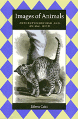

<body bgcolor="#FFFFFF" text="#000000" link="#0000FF" vlink="#CC0000" alink="#CC0000"><center><hr width="350" size="1" align="center" noshade>A fascinating exploration of the language we use for animal behavior<hr width="350" size="1" align="center" noshade><p><a href="https://cdcshoppingcart.uchicago.edu/Cart/ChicagoBook.aspx?ISBN=9781566396561&&PRESS=temple" target="_top">Buy this book!</a> | <a href="https://cdcshoppingcart.uchicago.edu/Cart/Cart.aspx?PRESS=temple" target="_top">View Cart</a> | <a href="https://cdcshoppingcart.uchicago.edu/Cart/Cart.aspx?PRESS=temple" target="_top">Check Out</a></p><p></p></center><!--none//--><h1>Images of Animals</h1>
<H2>Anthropomorphism and Animal Mind</H2>
<h3>Eileen Crist</h3>
<P>cloth 1-56639-656-5 $90.50, <FONT COLOR=#990033>Available</FONT>
<br>paper 1-56639-788-X $33.95, Apr 00, <FONT COLOR=#990033>Available</FONT>
<br>Electronic Book 1-43990-472-3 $33.95 <FONT COLOR=#990033>Available</FONT>
<BR> 256 pp
6x9
</P><BLOCKQUOTE><I>"A tension is built into the foundations of the pursuit of knowledge about animal life, for it is heir to both the cartesian verdict of an unbridgeable hiatus between humans and animals and the Darwinian affirmation of evolutionary continuity. The consequence of an intelletual and cultural heritage of opposed visions of the relationship between animals and humans is that the problematic of animal mind&#151whether affirmed or refuted, celebrated or doubted, qualified or sidestepped&#151is ever present, perhaps even the heart of the matter, in behavioral writings. Representations of animal life, whether intentionally or not, are always addressing what is for Western thought a most engrossing mystery&#151the contentious topic of animal mind or animal consciousness."</I>
<BR>&#151From the Introduction<I></I></BLOCKQUOTE>
<P>Seeing a cat rubbing against a person, Charles Darwin described her as "in an affectionate frame of mind"; for Samuel Barnett, a behavioralist, the mental realm is beyond the grasp of scientists and behavior must be described technically, as a physical action only. What difference does this difference make? In Eileen Crist's analysis of the language used to portray animal behavior, the difference "is that in the reader's mind the very image of the cat's 'body' is transfigured&#133from an experiencing subject&#133into a vacant object."
<P><I>Images of Animals</I> examines the literature of behavioral science, revealing how works with the common aim of documenting animal lives, habits, and instincts describe "realities that are world's apart." Whether the writer affirms the Cartesian verdict of an unbridgeable chasm between animals and humans or the Darwinian panorama of evolutionary continuity, the question of animal mind is ever present and problematic in behavioral thought. Comparing the naturalist writings of Charles Darwin, Jean Henri Fabre, and George and Elizabeth Peckham to works of classical ethology by Konrad Lorenz and Nikolaas Tinbergen and of contemporary sociobiology, Crist demonstrates how words matter. She does not attempt to defend any of these constructions as a faithful representation of animal existence, but to show how each internally coherent view molds the reader's understanding of animals. Rejecting the notion that "a neutral instrument in the depiction of animals and, in particular, it is never impartial with respect to the question of animal mind."
<BR>&nbsp;<h2>Excerpt</h2><P>Excerpt available at <a href="http://www.temple.edu/tempress">www.temple.edu/tempress</a></p>
<BR>&nbsp;<h2>Reviews</h2>
<p><I>"From anthorpomorphism to zoomorphism, Crist analyzes the language used to portray animal behavior in the behavioral science literature: from Darwin's stance of evolutionary continuity to ethologist Samuel Barnett's disavowal of studying anything other than observable behavior in 'realities that are worlds apart.'"</I>
<br>&#151<b><I>Book News</I></b>
<p><i>"...an important exposition of matters of great importance in understanding the relationships of human knowledge and animal actors and the intersection of human language and animal behavior."</i>
<br>&#151<b><i>Isis</i></b>
<p><i>"...an original, insightful, sophisticated, and lucidly written analysis of the powerful role that language plays in constructing our understanding of animal life. ... very much worth the attention of all those interested in how language shapes the way we think, and how, as human minds approach the subject of animal minds, anthropomorphism may have something going for it."</i>
<br>&#151<b><i>Science, Technology, & Human Values</i></b>
<p><i>"The author critically reviews the observation language of historical contributors to the study of animal behavior (Darwin, naturalists, ethologists, behaviorists and sociobiologists)."</i>
<br>&#151<b><i>The Quarterly Review of Biology</i></b>
<BR>&nbsp;<h2>Contents</h2><P>
<p>List of Illustrations
<br>Acknowledgments
<br>Introduction: The Significance of Language in Portraying Animals
<br>1. Darwin's Anthropomorphism
<br>2. Lifeworld and Subjectivity: Naturalists' Portraits of Animals
<br>3. The Ethological Constitution of Animals as Natural Objects
<br>4. Genes and Their Animals: The Language of Sociobiology
<br>5. Words as Icons: Comparative Images of Courtship
<br>6. Unraveling the Distinction Between Action and Behavior
<br>Notes
<br>Bibliography
<br>Index
</P><BR>&nbsp;<H2>About the Author(s)</H2>
<table><tr><td valign="top"><img src="/tempress/authors/1257_au.gif" height="90" width="75"></td><td width="100%" valign="middle"><p><B>Eileen Crist</B> is Assistant Professor at the Center for Interdisciplinary Studies at Virginia Polytechnic Institute.</P></td></tr></table>
<BR><H2>Subject Categories</H2>
<p><A HREF="/tempress/nature.html" TARGET="_top">Nature and the Environment</a>
<BR><A HREF="/tempress/sociology.html" TARGET="_top">Sociology</a>
</p>
<BR><h2 class="inpageheading">In the series</H2>
<P><I><a href="http://www.temple.edu/tempress/animals.html" onMouseOver="window.status='Click for other books in this series!'; return true;" onMouseOut="window.status=''; return true;" target="_top">Animals, Culture, and Society</a></i>, edited by Arnold Arluke and Clinton R. Sanders.
</p><p><I>Animals, Culture, and Society</I>, edited by Arnold Arluke and Clinton R. Sanders, is concerned with probing the complex and contradictory human-animal relationship through the publication of accessible books that consider the place of animals in our culture, our literature, our society, and our homes.</p>
<p align="center"><a href="https://cdcshoppingcart.uchicago.edu/Cart/ChicagoBook.aspx?ISBN=9781566396561&&PRESS=temple" target="_top">Buy this book!</a> | <a href="https://cdcshoppingcart.uchicago.edu/Cart/Cart.aspx?PRESS=temple" target="_top">View Cart</a> | <a href="https://cdcshoppingcart.uchicago.edu/Cart/Cart.aspx?PRESS=temple" target="_top">Check Out</a></p><p><font face="Arial" size="1"><a href="copyright.html" onMouseOver="window.status='Web Copyright Policy';return true;" onMouseOut="window.status=''" title="Web Copyright Policy">&copy;</a> 2015 <a href="http://www.temple.edu" target="new" onMouseOver="window.status='Link to Temple University home page';return true;" onMouseOut="window.status=''" title="Link to Temple University home page">Temple University</a>. All Rights Reserved. http://www.temple.edu/tempress/titles/1257_reg.html</font></p>